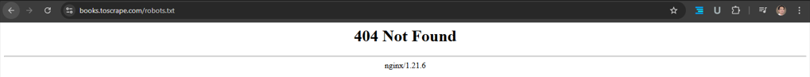
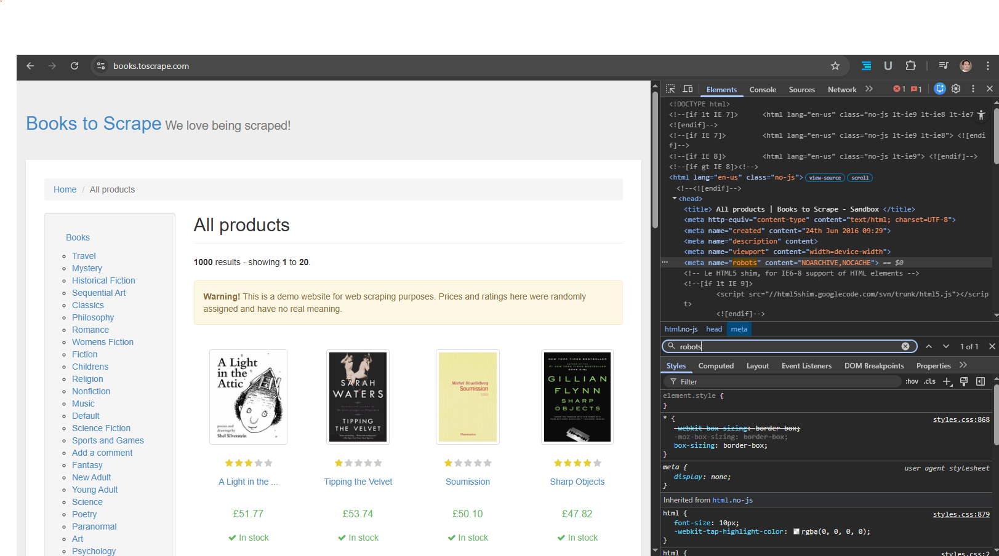
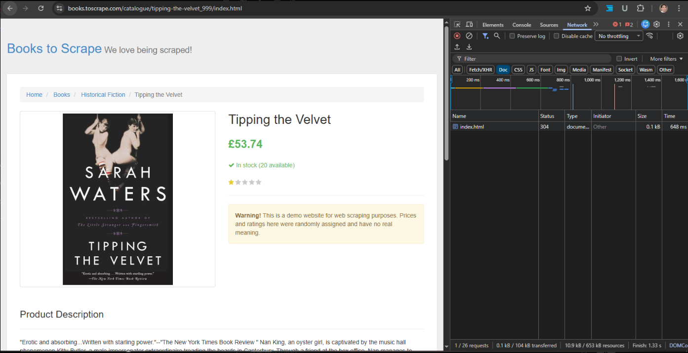

Indexability Audit - Books to Scrape Website
Technical SEO audit evaluating crawlability and indexability signals affecting how search engines discover and index pages.
Technical SEO audit evaluating crawlability and indexability signals affecting how search engines discover and index pages.
This audit evaluates whether search engines can properly crawl and index website pages by analyzing key technical SEO signals.
| Tool | Purpose |
|---|---|
| Chrome Developer Tools | Inspect HTML and page resources |
| Chrome Network Panel | Analyze HTTP status responses |
| Manual URL Inspection | Verify indexability signals |
| Spreadsheet Documentation | Record audit results |

Status Code
404 Not Found
https://books.toscrape.com/robots.txtThe website does not provide a robots.txt file. This means search engine crawlers are not restricted from accessing any part of the website.
User-agent: *
Disallow: /admin/
Disallow: /cart/
Sitemap: https://domain.com/sitemap.xml
Result
All tested URLs returned 404 Not Found.
/sitemap
/sitemap.xml
/sitemap_index.xmlThe website does not provide an XML sitemap. Sitemaps help search engines efficiently discover and crawl indexable pages.
https://domain.com/sitemap.xml<urlset>
<url>
<loc>https://domain.com/</loc>
</url>
</urlset>
https://books.toscrape.com/<meta name="robots" content="NOARCHIVE,NOCACHE">| Directive | Meaning |
|---|---|
| NOARCHIVE | Prevents cached copy storage |
| NOCACHE | Prevents cached result display |
The tag does not include "noindex", meaning the page remains indexable.

Result
No canonical tag detected.
Canonical tags help search engines identify the preferred version of a page. Missing canonical tags may cause duplicate content signals if multiple URLs reference the same content.
<link rel="canonical" href="https://books.toscrape.com/">
HTTP Status Code
304 Not Modified
/catalogue/tipping-the-velvet_999/index.htmlA 304 response means the browser loaded a cached version. This behavior is normal and does not affect crawlability.
| URL | Status Code | Indexable | Robots Allowed | Meta Robots | Canonical | In Sitemap | Issue |
|---|---|---|---|---|---|---|---|
| /robots.txt | 404 | N/A | Yes (default) | N/A | N/A | N/A | Missing robots.txt |
| /sitemap | 404 | N/A | Yes | N/A | N/A | No | XML sitemap not found |
| /sitemap.xml | 404 | N/A | Yes | N/A | N/A | No | XML sitemap missing |
| /sitemap_index.xml | 404 | N/A | Yes | N/A | N/A | No | Sitemap index missing |
| / | 200 | Yes | Yes | NOARCHIVE,NOCACHE | Missing | No | Missing canonical |
| /catalogue/tipping-the-velvet_999/index.html | 304 | Yes | Yes | NOARCHIVE,NOCACHE | Missing | No | Missing canonical |
| URL | Crawlable | Indexable | Issue |
|---|---|---|---|
| Homepage | Yes | Yes | Missing canonical tag |
| robots.txt | Yes | N/A | File missing |
| sitemap.xml | Yes | N/A | Sitemap missing |
| Product page | Yes | Yes | Missing canonical tag |
| Issue | Recommendation |
|---|---|
| Missing robots.txt | Create robots.txt to control crawler access |
| Missing XML sitemap | Generate sitemap.xml and submit to search engines |
| Missing canonical tag | Add self-referencing canonical tags |
<link rel="canonical" href="https://books.toscrape.com/page">